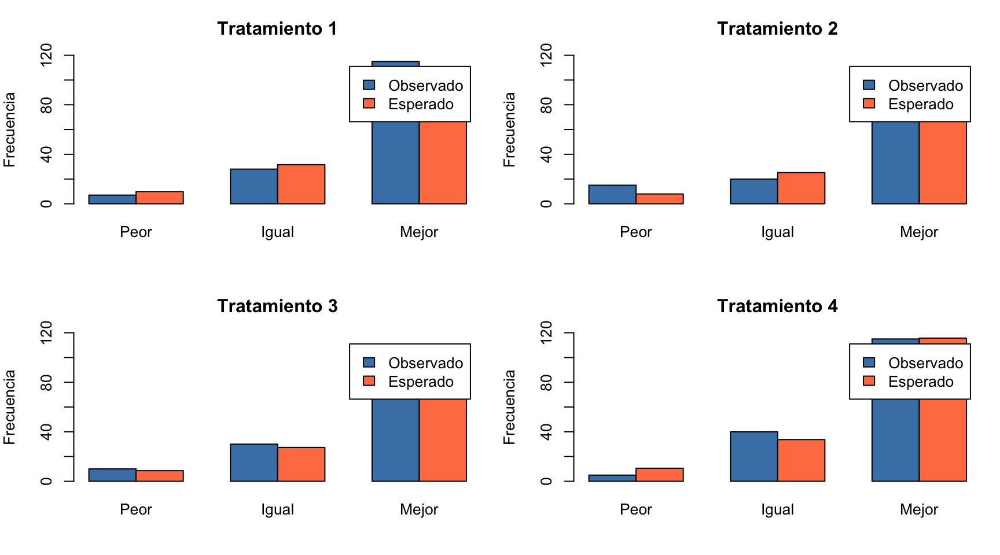
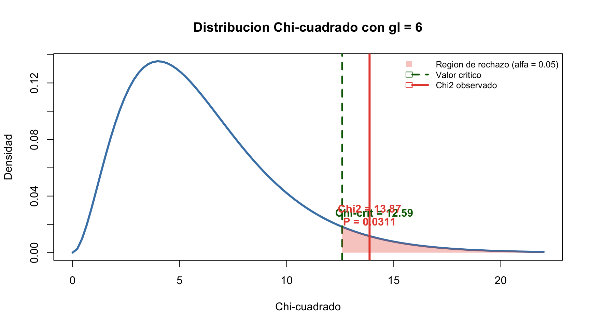
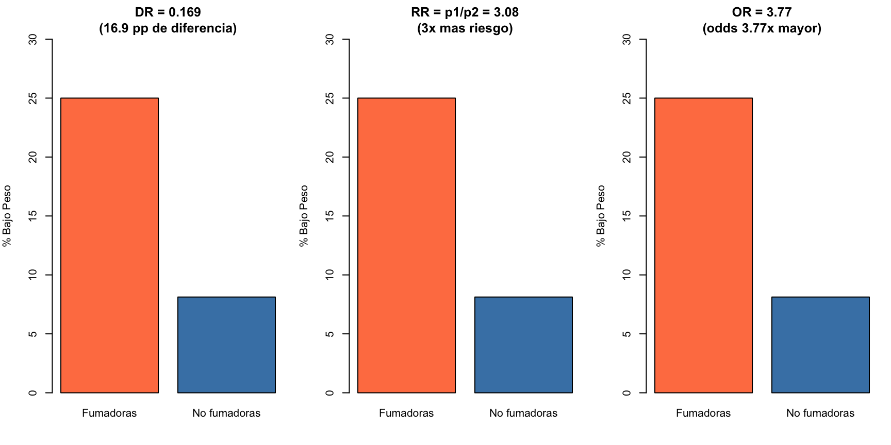
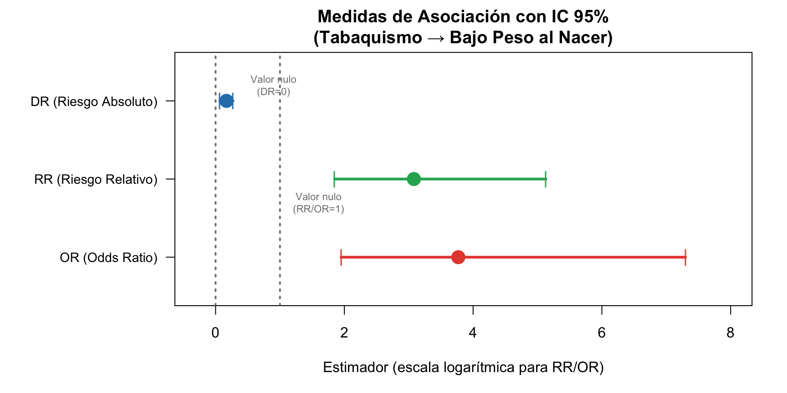
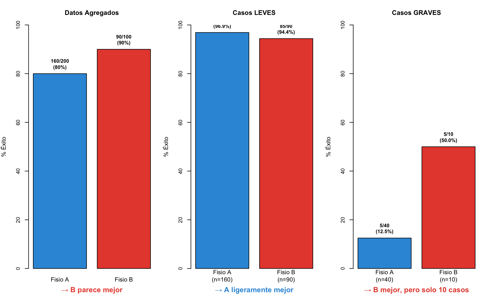

Mostrar código R
trat <- matrix(c(7,28,115,15,20,85,10,30,90,5,40,115), nrow=4, byrow=TRUE)
round(chisq.test(trat)$expected, 2) [,1] [,2] [,3]
[1,] 9.91 31.61 108.48
[2,] 7.93 25.29 86.79
[3,] 8.59 27.39 94.02
[4,] 10.57 33.71 115.71Tema V — Test Chi-Cuadrado, Tablas 2×2 y McNemar
Dpto. Estadística e Investigación Operativa, Universidad de Granada
2026-01-01
Grado en Fisioterapia
CC BY 4.0 · Miguel Angel Luque-Fernández
Miguel Angel Luque-Fernández · maluque.netlify.app
Dpto. Estadística e Investigación Operativa · Universidad de Granada
Del contraste a la asociación: En el Tema 4 aprendiste a contrastar hipótesis sobre medias y proporciones. Ahora ampliamos ese marco a tablas de contingencia: ¿hay asociación entre dos variables cualitativas? El test χ² y las medidas de asociación (OR, RR, NNT) son las herramientas que necesitas.
Tip
Al finalizar este tema sabrás:
tabla2x2() y testmcnemar() de BioEstatRCaso clínico: Un ensayo compara terapia manual vs. ejercicio terapéutico para dolor lumbar.
| Recupera | No recupera | Total | |
|---|---|---|---|
| Terapia manual | 42 | 18 | 60 |
| Ejercicio | 30 | 30 | 60 |
| Total | 72 | 48 | 120 |
Dos aplicaciones del test \(\chi^2\):
Tip
En la práctica, homogeneidad e independencia se resuelven con la misma fórmula (\(E_{ij} = F_i \times C_j / T\)), aunque conceptualmente son problemas diferentes.
Una tabla de contingencia (\(r \times c\)) cruza la información de dos variables cualitativas.
Ejemplo 1 — Homogeneidad (4×3): 4 tratamientos × Estado del paciente (n=560)
| Tratamiento | Peor | Igual | Mejor | Total fila (\(F_i\)) |
|---|---|---|---|---|
| 1 | 7 | 28 | 115 | 150 |
| 2 | 15 | 20 | 85 | 120 |
| 3 | 10 | 30 | 90 | 130 |
| 4 | 5 | 40 | 115 | 160 |
| Total col. (\(C_j\)) | 37 | 118 | 405 | T = 560 |
Ejemplo 2 — Independencia (3×3): Localización del tumor × Naturaleza (n=141)
| Localización | Benigno | Maligno | Otros | Total |
|---|---|---|---|---|
| Lóbulo frontal | 23 | 9 | 6 | 38 |
| Lóbulo temporal | 21 | 4 | 3 | 28 |
| Otras áreas | 34 | 24 | 17 | 75 |
| Total | 78 | 37 | 26 | 141 |
Tip
¿Cómo distinguirlos? El número de muestras lo indica: 1 muestra → independencia; 2+ muestras → homogeneidad.
Homogeneidad
Independencia
Ambos tests comparten la misma mecánica de cálculo:
\[E_{ij} = \frac{F_i \times C_j}{T} \qquad \chi^2_{\text{exp}} = \sum_{i=1}^{r} \sum_{j=1}^{c} \frac{(O_{ij} - E_{ij})^2}{E_{ij}} \qquad \text{gl} = (r-1)(c-1)\]
La diferencia está en la interpretación de \(H_0\), no en la fórmula.
Caso: Un fisioterapeuta estudia 200 pacientes con dolor lumbar, clasificados por tipo de tratamiento (manual vs. ejercicio) y resultado (mejoría sí/no).
| Mejoría Sí | Mejoría No | Total | |
|---|---|---|---|
| Terapia Manual | 70 | 30 | 100 |
| Ejercicio | 50 | 50 | 100 |
| Total | 120 | 80 | 200 |
Interpretación A — Homogeneidad (2 muestras independientes): - \(H_0\): La proporción de mejoría es igual en ambos tratamientos - 70% mejoría en manual vs. 50% en ejercicio → ¿son homogéneos? - \(\chi^2 = 8.33\), \(P = 0.004\) → No son homogéneos (las proporciones difieren)
Interpretación B — Independencia (1 muestra de 200): - \(H_0\): El tipo de tratamiento y el resultado son independientes - ¿Está asociado el tipo de tratamiento con la mejoría? - \(\chi^2 = 8.33\), \(P = 0.004\) → No son independientes (existe asociación)
Tip
Mismo cálculo, distinta pregunta: La fórmula \(\chi^2\) es idéntica. Lo que cambia es el diseño del estudio (¿1 muestra o 2?) y la redacción de \(H_0\). En la práctica clínica, la interpretación como homogeneidad suele ser más natural cuando comparas tratamientos.
Cruzamos dos variables cualitativas \(A\) (filas, \(r\) categorías) y \(B\) (columnas, \(c\) categorías):
| \(B_1\) | \(B_2\) | \(\cdots\) | \(B_c\) | Totales | |
|---|---|---|---|---|---|
| \(A_1\) | \(O_{11}\) | \(O_{12}\) | \(\cdots\) | \(O_{1c}\) | \(F_1\) |
| \(A_2\) | \(O_{21}\) | \(O_{22}\) | \(\cdots\) | \(O_{2c}\) | \(F_2\) |
| \(\vdots\) | \(\vdots\) | \(\vdots\) | \(\ddots\) | \(\vdots\) | \(\vdots\) |
| \(A_r\) | \(O_{r1}\) | \(O_{r2}\) | \(\cdots\) | \(O_{rc}\) | \(F_r\) |
| Totales | \(C_1\) | \(C_2\) | \(\cdots\) | \(C_c\) | \(T\) |
(La notación de sumatorios y los porcentajes se detallan a continuación.)
Sumatorios (notación compacta):
Tres tipos de tablas de porcentajes: por filas, por columnas, y totales.
Estudio: Asociación entre hábito de fumar de la madre y bajo peso del recién nacido (n=400)
| Fuma Sí | Fuma No | Total | |
|---|---|---|---|
| Peso Bajo | 20 | 26 | 46 |
| Peso Normal | 60 | 294 | 354 |
| Total | 80 | 320 | 400 |
Porcentajes por columnas: del total de madres fumadoras 25% tienen niño con bajo peso vs 8% de no fumadoras
Porcentajes por filas: del total de niños con bajo peso, el 43.5% son hijos de madres fumadoras
Porcentajes totales: el 5% del total son madres fumadoras con niño de bajo peso
La misma tabla \(2 \times 2\) puede proceder de tres tipos de muestreo:
Transversal - 1 muestra de \(T\) individuos - Se clasifican por enfermedad y FR
Prospectivo (Cohortes) - 2 muestras: \(C_1\) expuestos y \(C_2\) no expuestos - Se observa enfermedad
Retrospectivo (Casos-Control) - 2 muestras: \(F_1\) enfermos y \(F_2\) no enfermos - Se observa exposición
| FR Sí | FR No | Total | |
|---|---|---|---|
| Enfermos | \(O_{11}\) | \(O_{12}\) | \(F_1\) |
| No Enfermos | \(O_{21}\) | \(O_{22}\) | \(F_2\) |
| Total | \(C_1\) | \(C_2\) | \(T\) |
Advertencia
El tipo de estudio determina qué medidas de asociación se pueden estimar y qué corrección \(c\) se debe usar en el \(\chi^2\).
Ejemplo — 4 tratamientos:
| Tratamiento | Peor | Igual | Mejor | Total |
|---|---|---|---|---|
| 1 | 7 | 28 | 115 | 150 |
| 2 | 15 | 20 | 85 | 120 |
| 3 | 10 | 30 | 90 | 130 |
| 4 | 5 | 40 | 115 | 160 |
| Total | 37 | 118 | 405 | 560 |
Hipótesis:
\(H_0\): Los 4 tratamientos son homogéneos (igual proporción en cada categoría de resultado)
\(H_1\): Al menos un tratamiento es diferente a los demás
¿Qué supone \(H_0\)? \(p_{11}=p_{21}=p_{31}=p_{41}\) (mismo % que empeoran), \(p_{12}=p_{22}=p_{32}=p_{42}\) (mismo % que quedan igual), y \(p_{13}=p_{23}=p_{33}=p_{43}\) (mismo % que mejoran).
Si \(H_0\) es cierta, las frecuencias esperadas se calculan como:
\[E_{ij} = \frac{F_i \times C_j}{T}\]
Cálculo para el ejemplo: \(E_{11} = \frac{150 \times 37}{560} = 9.91\), \(\quad E_{12} = \frac{150 \times 118}{560} = 31.61\)
| Tratamiento | Peor (\(E_{i1}\)) | Igual (\(E_{i2}\)) | Mejor (\(E_{i3}\)) |
|---|---|---|---|
| 1 | 9.91 | 31.61 | 108.48 |
| 2 | 7.93 | 25.28 | 86.79 |
| 3 | 8.59 | 27.39 | 94.02 |
| 4 | 10.57 | 33.72 | 115.71 |
4 tratamientos de fisioterapia × Estado del paciente:
O <- matrix(c(7,28,115, 15,20,85, 10,30,90, 5,40,115), nrow=4, byrow=TRUE)
E <- matrix(c(9.91,31.61,108.48, 7.93,25.28,86.79, 8.59,27.39,94.02, 10.57,33.72,115.71), nrow=4, byrow=TRUE)
par(mfrow=c(2,2), mar=c(4,4,3,1))
for(i in 1:4){
barplot(rbind(O[i,], E[i,]), beside=TRUE, names=c("Peor","Igual","Mejor"),
col=c("steelblue","coral"), main=paste("Tratamiento",i),
ylab="Frecuencia", ylim=c(0,120), legend=c("Observado","Esperado"))
}
El \(\chi^2\) mide la discrepancia entre barras azules (observado) y rojas (esperado bajo \(H_0\)).
Importante
Dos condiciones que deben cumplirse simultáneamente:
En el ejemplo (4 tratamientos, 12 celdas): todas las \(E_{ij} > 5\) ✓ → el método es válido.
Se admitirían como máximo \(12 \times 0.20 = 2.4 \rightarrow 2\) valores con \(1 < E_{ij} \leq 5\). Con 3 ya no sería válido.
\[\chi^2_{\text{exp}} = \sum_{i=1}^{r} \sum_{j=1}^{c} \frac{(O_{ij} - E_{ij})^2}{E_{ij}}\]
Grados de libertad: \(\text{gl} = (r-1) \times (c-1)\)
En el ejemplo (4×3): gl = \((4-1)(3-1) = 6\)
\[\chi^2_{\text{exp}} = \frac{(7-9.91)^2}{9.91} + \frac{(28-31.61)^2}{31.61} + \cdots + \frac{(115-115.71)^2}{115.71} = 13.87\]
χ²exp = 13.87 | gl = 6 | P = 0.0311Resultado: \(P < 0.05\) → Rechazamos \(H_0\). Los 4 tratamientos no son homogéneos.
gl <- 6
chi_exp <- 13.87
chi_crit <- qchisq(0.95, gl)
p_val <- round(1 - pchisq(chi_exp, gl), 4)
curve(dchisq(x, gl), 0, 22, lwd = 3, col = "steelblue",
main = "Distribucion Chi-cuadrado con gl = 6",
xlab = "Chi-cuadrado", ylab = "Densidad")
abline(v = chi_crit, col = "darkgreen", lwd = 2.5, lty = 2)
abline(v = chi_exp, col = "#e74c3c", lwd = 3)
# Region de rechazo
xr <- seq(chi_crit, 22, 0.01)
yr <- dchisq(xr, gl)
polygon(c(xr, rev(xr)), c(yr, rep(0, length(yr))),
col = rgb(0.9, 0.3, 0.2, 0.3), border = NA)
# Etiquetas
text(chi_crit + 1.5, dchisq(chi_crit, gl) + 0.01,
"Chi-crit = 12.59", col = "darkgreen", font = 2)
text(chi_exp, dchisq(chi_exp, gl) + 0.015,
paste0("Chi2 = ", chi_exp, "\nP = ", p_val), col = "#e74c3c", font = 2)
legend("topright", c("Region de rechazo (alfa = 0.05)", "Valor critico", "Chi2 observado"),
fill = c(rgb(0.9, 0.3, 0.2, 0.3), NA, NA),
border = c(NA, "darkgreen", "#e74c3c"),
lty = c(NA, 2, 1), lwd = c(NA, 2.5, 3),
col = c(NA, "darkgreen", "#e74c3c"), bty = "n", cex = 0.8)
Tip
¿Cómo leer este gráfico? La curva es la distribución \(\chi^2_6\) bajo \(H_0\). El área roja es la región de rechazo (\(\alpha = 0.05\)). Nuestro \(\chi^2 = 13.87\) (línea roja) cae dentro de la región de rechazo → \(P < 0.05\) → diferencias significativas entre tratamientos.
El test \(\chi^2\) es un test ómnibus: detecta diferencias pero no dice dónde están.
Tres métodos para identificar las causas:
¿Qué tratamiento(s) es/son distinto(s)? Observemos los porcentajes:
| Tratamiento | Peor | Igual | Mejor | Total |
|---|---|---|---|---|
| 1 | 4.7% | 18.7% | 76.7% | 100% |
| 2 | 12.5% | 16.7% | 70.8% | 100% |
| 3 | 7.7% | 23.1% | 69.2% | 100% |
| 4 | 3.1% | 25.0% | 71.9% | 100% |
| Total | 6.6% | 21.1% | 72.3% | 100% |
Observaciones: - Mayor discrepancia en % de “Peor”: Tto 2 (12.5%, el que más empeora) vs Tto 4 (3.1%, el que menos) - Los % de “Mejor” son similares (~70% en todos los tratamientos) - Los % de “Igual” sugieren dos grupos: Ttos 1-2 vs Ttos 3-4
Advertencia
El análisis de porcentajes es una primera aproximación subjetiva. El estudio definitivo se hace con residuos estandarizados.
Tip
Pregunta para reflexionar: ¿Qué tratamiento recomendarías descartar basándote solo en estos porcentajes? ¿Es suficiente esta evidencia para tomar una decisión clinica?
\[R_{ij} = \frac{O_{ij} - E_{ij}}{\sqrt{E_{ij}}}\]
Ejemplo: ¿Está asociada la naturaleza del tumor con su localización? (n=141)
| Localización | Benigno | Maligno | Otros | Total |
|---|---|---|---|---|
| Lóbulo frontal | 23 | 9 | 6 | 38 |
| Lóbulo temporal | 21 | 4 | 3 | 28 |
| Otras áreas | 34 | 24 | 17 | 75 |
| Total | 78 | 37 | 26 | 141 |
\(H_0\): Naturaleza y localización son independientes
\(H_1\): Naturaleza y localización están asociadas
χ²exp = 7.84 | gl = 4 | P = 0.0975Importante
Las tablas \(2 \times 2\) requieren un tratamiento especial:
Formato estándar (enfermedad en filas, factor de riesgo en columnas):
| FR Expuesto | FR No Expuesto | Total | |
|---|---|---|---|
| Enfermedad Presente | \(O_{11}\) | \(O_{12}\) | \(F_1\) |
| Enfermedad Ausente | \(O_{21}\) | \(O_{22}\) | \(F_2\) |
| Total | \(C_1\) | \(C_2\) | \(T\) |
Estudio transversal (n=400 nacimientos):
| Fuma Sí | Fuma No | Total | |
|---|---|---|---|
| Peso Bajo | 20 | 26 | 46 |
| Peso Normal | 60 | 294 | 354 |
| Total | 80 | 320 | 400 |
¿Qué categoría es el factor de riesgo? Con porcentajes por columnas:
Como 25% > 8%, fumar = Sí es la modalidad de riesgo.
Advertencia
¡NO es válida la expresión general! Para tablas \(2 \times 2\) se usa:
\[\chi^2_{\text{exp}} = \frac{\left(|O_{11}O_{22} - O_{12}O_{21}| - c\right)^2 \cdot T}{F_1 \cdot F_2 \cdot C_1 \cdot C_2}\]
donde: - \(|O_{11}O_{22} - O_{12}O_{21}|\): producto cruzado (en valor absoluto) - \(c\): correccion de continuidad — depende del tipo de estudio - \(F_1, F_2, C_1, C_2\): totales marginales de filas y columnas
(La corrección \(c\) y las condiciones de validez se detallan a continuación.)
Frecuencia mínima esperada: \(E = \min(F_1,F_2) \cdot \min(C_1,C_2) / T\)
| Tipo de estudio | \(E\) mínimo | \(E\) si \(T<500\) | Corrección \(c\) |
|---|---|---|---|
| Transversal | \(E \geq 4.9\) | \(E \geq 7.7\) | \(c = 0.5\) |
| Prospectivo | \(E \geq 6.2\) | \(E \geq 3.9\) | \(c = 1\) si \(C_1\neq C_2\), \(c=2\) si \(C_1=C_2\) |
| Retrospectivo | Misma que prospectivo | \(c = 1\) si \(F_1\neq F_2\), \(c=2\) si \(F_1=F_2\) |
Tip
¿Por qué varía \(c\)? — Intuición: Imagina que el test \(\chi^2\) funciona como una lupa. En estudios transversales (una muestra, sin márgenes fijos), la lupa tiene más aumento → basta una corrección pequeña (\(c=0.5\)). En estudios prospectivos/retrospectivos (dos muestras, márgenes fijos por diseño), la lupa tiene menos aumento → necesitas una corrección mayor (\(c=1\) o \(c=2\)) para no “ver” asociaciones que son solo ruido.
gl = 1 siempre en tablas \(2 \times 2\).
Estudio transversal: \(E = \frac{46 \times 80}{400} = 9.2 \geq 4.9\) ✓. \(T=400 < 500\): \(E=9.2 \geq 7.7\) ✓
\[\chi^2_{\text{exp}} = \frac{(|20 \times 294 - 26 \times 60| - 0.5)^2 \times 400}{46 \times 354 \times 80 \times 320}\]
\[= \frac{(5880 - 1560 - 0.5)^2 \times 400}{46 \times 354 \times 80 \times 320} = \frac{(4319.5)^2 \times 400}{417,177,600} = 17.90\]
χ²exp = 16.29 | P = 5.442e-05gl = 1, \(P < 0.001\) → Rechazamos \(H_0\). Existe asociación significativa entre fumar y bajo peso.
Fumar y bajo peso (n=400):
| Fuma Sí | Fuma No | Total | |
|---|---|---|---|
| Peso Bajo | 20 | 26 | 46 |
| Peso Normal | 60 | 294 | 354 |
| Total | 80 | 320 | 400 |
par(mfrow=c(1,3), mar=c(4,4,3,1))
# DR
p1<-20/80; p2<-26/320
barplot(c(p1,p2)*100, names=c("Fumadoras","No fumadoras"), col=c("coral","steelblue"),
main=paste0("DR = ",round(p1-p2,3),"\n(",round((p1-p2)*100,1)," pp de diferencia)"),
ylab="% Bajo Peso", ylim=c(0,30))
# RR = 3.08
barplot(c(p1,p2)*100, names=c("Fumadoras","No fumadoras"), col=c("coral","steelblue"),
main=paste0("RR = p1/p2 = ",round(p1/p2,2),"\n(3x mas riesgo)"),
ylab="% Bajo Peso", ylim=c(0,30))
# OR = 3.77
barplot(c(p1,p2)*100, names=c("Fumadoras","No fumadoras"), col=c("coral","steelblue"),
main=paste0("OR = ",round((20*294)/(26*60),2),"\n(odds 3.77x mayor)"),
ylab="% Bajo Peso", ylim=c(0,30))
Importante
Para el estudiante: DR se interpreta en escala aditiva (diferencia de %). RR y OR en escala multiplicativa (cuántas veces más). DR = 0 y RR/OR = 1 significan ausencia de asociación.
El valor P no indica la intensidad de la asociación, solo la evidencia muestral contra \(H_0\).
1. Riesgo Absoluto (Diferencia de Berkson): \[d = p_1 - p_2 = \frac{O_{11}}{C_1} - \frac{O_{12}}{C_2}\] \(d = 0\) independencia; \(d > 0\) asociación positiva; \(d < 0\) asociación negativa
2. Riesgo Relativo: \[R = \frac{p_1}{p_2} = \frac{O_{11}/C_1}{O_{12}/C_2}\] \(R = 1\) independencia; \(R > 1\) factor de riesgo; \(R < 1\) factor protector
3. Razón del Producto Cruzado (Odds Ratio): \[O = \frac{O_{11} \times O_{22}}{O_{12} \times O_{21}}\] \(O = 1\) independencia; \(O > 1\) asociación positiva; \(O < 1\) asociación negativa
Riesgo Absoluto d = 0.169
Riesgo Relativo R = 3.077
Odds Ratio O = 3.769Interpretación: - \(d = 0.169\): La probabilidad de bajo peso es 16.9 puntos porcentuales mayor en madres fumadoras - \(R = 3.08\): La probabilidad de bajo peso es 3.08 veces mayor (¡el triple!) si la madre fuma - \(O = 3.77\): La odds de bajo peso es 3.77 veces mayor en madres fumadoras
Tip
Pregunta para reflexionar: ¿Por qué el OR (3.77) es mayor que el RR (3.08)? Pista: observa las fórmulas — ¿qué ocurre cuando la prevalencia del desenlace no es baja?
# Forest plot de las medidas de asociación con IC 95%
medidas <- c("DR (Riesgo Absoluto)", "RR (Riesgo Relativo)", "OR (Odds Ratio)")
estimador <- c(0.169, 3.08, 3.77)
ic_inf <- c(0.067, 1.85, 1.95)
ic_sup <- c(0.271, 5.13, 7.30)
valor_nulo <- c(0, 1, 1)
colores <- c("#2980b9", "#27ae60", "#e74c3c")
par(mar = c(5, 10, 3, 2))
plot(estimador, 3:1, pch = 19, cex = 2, col = colores,
xlim = c(-0.3, 8), ylim = c(0.5, 3.5), yaxt = "n",
xlab = "Estimador (escala logarítmica para RR/OR)", ylab = "",
main = "Medidas de Asociación con IC 95%\n(Tabaquismo → Bajo Peso al Nacer)",
log = "")
axis(2, at = 3:1, labels = medidas, las = 1, cex.axis = 0.9)
# Intervalos de confianza
for(i in 1:3) {
lines(c(ic_inf[i], ic_sup[i]), c(3-i+1, 3-i+1), lwd = 3, col = colores[i])
points(ic_inf[i], 3-i+1, pch = "|", cex = 1.2, col = colores[i])
points(ic_sup[i], 3-i+1, pch = "|", cex = 1.2, col = colores[i])
}
# Líneas de valor nulo
abline(v = 0, lty = 3, col = "grey50", lwd = 2)
text(0.9, 3.2, "Valor nulo\n(DR=0)", col = "grey50", cex = 0.7)
abline(v = 1, lty = 3, col = "grey50", lwd = 2)
text(1.6, 1.7, "Valor nulo\n(RR/OR=1)", col = "grey50", cex = 0.7)
Tip
Regla visual: Si el IC de DR no cruza el 0, la asociación es significativa. Si el IC de RR/OR no cruza el 1, la asociación es significativa. En este ejemplo, los tres IC evitan sus respectivos valores nulos → asociación significativa.
| Medida | Transversal | Prospectivo | Retrospectivo |
|---|---|---|---|
| \(d\) (Riesgo Absoluto) | ✓ | ✓ | ✗ |
| \(R\) (Riesgo Relativo) | ✓ | ✓ | Aprox. si \(P(E) < 10\%\) |
| \(O\) (Odds Ratio) | ✓ | ✓ | ✓ |
El Odds Ratio es la medida de asociación por excelencia en epidemiología: - Válido en cualquier tipo de estudio - Forma parte de modelos más complejos (regresión logística) - Cuidado: no interpretar \(O\) como si fuera \(R\). Solo se aproximan cuando \(P(E) < 10\%\)
Nota
¿Por qué el OR es la medida más usada en epidemiología?
Referencia: Rothman, K. J., Greenland, S., & Lash, T. L. (2008). Modern Epidemiology (3rd ed.). LWW.
Ejemplo clínico: Eficacia de dos terapias para dolor crónico en fibromialgia. n=166 mujeres reciben ambas terapias en orden aleatorizado:
| Terapia B: Sí | Terapia B: No | |
|---|---|---|
| Terapia A: Sí | 38 | 15 |
| Terapia A: No | 31 | 82 |
Interpretación: - 38 responden a ambas (concordantes positivas) - 82 no responden a ninguna (concordantes negativas) - 15 responden a A pero no a B (discordantes) - 31 responden a B pero no a A (discordantes)
Importante
Las celdas concordantes (38 y 82) no aportan información diferencial. El test se basa exclusivamente en las celdas discordantes (15 y 31).
\(H_0\): Las dos terapias son igualmente eficaces \(\quad \Leftrightarrow \quad p_{12} = p_{21}\)
\(H_1\): Las dos terapias no son igualmente eficaces
Condición de validez: \(n_{12} + n_{21} > 10\). En el ejemplo: \(15 + 31 = 46 > 10\) ✓
Estadístico de contraste (aproximación normal):
\[z_{\text{exp}} = \frac{|n_{12} - n_{21}| - 0.5}{\sqrt{n_{12} + n_{21}}}\]
\[z_{\text{exp}} = \frac{|15 - 31| - 0.5}{\sqrt{15 + 31}} = \frac{15.5}{6.78} = 2.21\]
\(P = 2 \times P(Z > 2.21) \approx 0.027\) → Rechazamos \(H_0\) (las terapias no son iguales)
Tip
Pregunta para reflexionar: ¿Qué significa \(P = 0.027\) en términos clínicos? Si tuvieras que explicárselo a un paciente, ¿cómo lo harías?
Proporciones de respuesta:
\(\hat{p}_A = \frac{38+15}{166} = 0.319\) (31.9% responden a terapia A)
\(\hat{p}_B = \frac{38+31}{166} = 0.416\) (41.6% responden a terapia B)
Diferencia estimada: \(\hat{p}_A - \hat{p}_B = -0.095\) (−9.5 puntos porcentuales)
IC 95% para la diferencia (Agresti-Min):
Diferencia = -0.0964 | IC95% = ( -0.1751 , -0.0177 )Conclusión: La terapia B tiene mayor respuesta que la A (diferencia −9.5%, IC 95%: −17.4% a −1.7%). Como el IC no contiene al 0, la diferencia es significativa (\(P = 0.027\)).
| Característica | Transversal | Prospectivo (Cohortes) | Retrospectivo (Casos-Control) |
|---|---|---|---|
| Muestras | 1 (población) | 2 (expuestos / no expuestos) | 2 (enfermos / no enfermos) |
| ¿Estima prevalencia? | ✓ Sí | ✗ No | ✗ No |
| ¿Estima incidencia? | ✗ No | ✓ Sí | ✗ No |
| ¿DR? | ✓ Sí | ✓ Sí | ✗ No |
| ¿RR? | ✓ Sí | ✓ Sí | Aprox. si \(P(E) < 10\%\) |
| ¿OR? | ✓ Sí | ✓ Sí | ✓ Sí |
| Coste/tiempo | Bajo | Alto (requiere seguimiento) | Medio |
| Causalidad | No (asociación) | Sí (temporalidad) | No |
Importante
Regla: Antes de analizar una tabla \(2 \times 2\), identificar el tipo de estudio. De ello depende qué medidas se pueden estimar y qué corrección \(c\) usar en el \(\chi^2\).
| Medida | Símbolo | Fórmula | Rango | Valor nulo | Significado |
|---|---|---|---|---|---|
| Diferencia de Riesgos | DR | \(p_1 - p_2\) | \([-1, +1]\) | 0 | \(p_1 = p_2\) |
| Riesgo Relativo | RR | \(p_1 / p_2\) | \([0, \infty)\) | 1 | \(p_1 = p_2\) |
| Odds Ratio | OR | \(\frac{O_{11}O_{22}}{O_{12}O_{21}}\) | \([0, \infty)\) | 1 | Igualdad de odds |
Interpretación según el valor:
| Valor | DR (escala aditiva) | RR / OR (escala multiplicativa) |
|---|---|---|
| Nulo | DR = 0 | RR = 1, OR = 1 |
| Factor de riesgo | DR > 0 | RR > 1, OR > 1 |
| Factor protector | DR < 0 | 0 < RR < 1, 0 < OR < 1 |
Importante
Regla fundamental para interpretar IC de medidas de asociación:
| Medida | Escala | Valor nulo | No significativo | Significativo |
|---|---|---|---|---|
| DR | Aditiva | 0 | IC contiene al 0 | IC no contiene al 0 |
| RR | Multiplicativa | 1 | IC contiene al 1 | IC no contiene al 1 |
| OR | Multiplicativa | 1 | IC contiene al 1 | IC no contiene al 1 |
Ejemplos con datos clínicos de fisioterapia:
| Medida | Estimación | IC 95% | ¿Significativo? | Interpretación |
|---|---|---|---|---|
| DR (ejercicio vs control) | +0.15 | (+0.03, +0.27) | Sí (0 no está en IC) | Ejercicio aumenta mejoría 15pp |
| RR (ejercicio vs control) | 1.50 | (0.85, 2.65) | No (1 está en IC) | Sin evidencia suficiente |
| OR (fumar vs no fumar) | 3.77 | (1.95, 7.30) | Sí (1 no está en IC) | Asociación significativa |
| DR (terapia A vs B) | 0.05 | (−0.18, +0.08) | No (0 está en IC) | Sin diferencia significativa |
Tip
Para estudiantes: Escala aditiva (DR) → pensar en 0. Escala multiplicativa (RR/OR) → pensar en 1. Si el IC contiene ese número → no significativo. Si no lo contiene → significativo.
Nota
Más allá del \(\chi^2\) básico: en esta sección exploramos alternativas para muestras pequeñas (Fisher), medidas de impacto clínico (NNT) y la importancia de la estratificación (Paradoja de Simpson).
Advertencia
Cuándo usar Fisher en vez de χ²: Si alguna frecuencia esperada es < 5 (o < 1), el test χ² no es válido. Usar el test exacto de Fisher (Fisher, 1922).
Ejemplo clínico: Estudio piloto (n=20) de eficacia de terapia manual para cefalea tensional.
| Mejoría | No mejoría | |
|---|---|---|
| Terapia manual | 8 | 2 |
| Control | 3 | 7 |
Frecuencias esperadas: Mejoría No mejoría
Terapia 5.5 4.5
Control 5.5 4.5
Fisher's Exact Test for Count Data
data: matriz
p-value = 0.06978
alternative hypothesis: true odds ratio is not equal to 1
95 percent confidence interval:
0.8821175 127.0558418
sample estimates:
odds ratio
8.153063 Interpretación: Con muestras tan pequeñas (n=20), el test exacto de Fisher es más fiable que el χ². Si P < 0.05, hay asociación significativa entre terapia y mejoría.
Tip
Idea clave: Fisher calcula la probabilidad exacta de obtener una tabla tan o más extrema que la observada, sin usar ninguna aproximación.
El χ² tradicional usa una aproximación (la distribución χ² es una aproximación de la verdadera distribución del estadístico). Con muestras pequeñas, esta aproximación falla. Fisher evita la aproximación: calcula directamente la probabilidad de la tabla observada.
Imagina que fijas todos los márgenes de la tabla (totales por fila y columna). La pregunta es: ¿de cuántas formas distintas pueden distribuirse los pacientes en las celdas manteniendo esos totales fijos?
\[ P(\text{tabla}) = \frac{\binom{a+b}{a}\binom{c+d}{c}}{\binom{n}{a+c}} = \frac{(a+b)!(c+d)!(a+c)!(b+d)!}{a!b!c!d!n!} \]
donde \(a, b, c, d\) son las 4 celdas y \(n = a+b+c+d\).
Nota
Para el estudiante de fisioterapia: No necesitas memorizar la fórmula. Lo importante es entender que Fisher calcula la probabilidad de cada posible tabla con los mismos totales de fila y columna, y luego suma las probabilidades de todas las tablas tan o más extremas que la observada. Esa suma es el P-valor.
fisher.test() en R?Para nuestra tabla (Terapia: 8 mejoría / 2 no; Control: 3 / 7):
# Ilustración conceptual: todas las tablas posibles con los mismos márgenes
# fisher.test() hace esto internamente:
# Tabla más extrema a favor de terapia: 10 mejoría / 0 no; Control 1 / 9
# Tabla más extrema a favor de control: 1 mejoría / 9 no; Control 10 / 0
# La nuestra: 8 mejoría / 2 no; Control 3 / 7
# P-valor = P(nuestra tabla) + P(tablas aún más extremas)Piensa en una urna con 11 bolas rojas (mejoría) y 9 azules (no mejoría). Sacas 10 bolas al azar para el grupo de terapia. ¿Cuál es la probabilidad de sacar 8 o más rojas solo por azar? Fisher responde esta pregunta exactamente, sin necesidad de que el tamaño muestral sea grande.
¿Por qué el test de Fisher no depende de frecuencias esperadas ≥ 5? Porque no usa ninguna aproximación asintótica — calcula la probabilidad directamente a partir de la combinatoria.
\[\NNT = \frac{1}{|\DR|} = \frac{1}{|p_1 - p_2|}\]
Interpretación: NNT = número de pacientes que necesitas tratar con la terapia experimental (vs control) para que un paciente adicional se beneficie.
| NNT | Interpretación |
|---|---|
| 1–5 | Efecto muy grande |
| 5–10 | Efecto moderado |
| 10–20 | Efecto pequeño |
| > 20 | Efecto muy pequeño |
Ejemplo: Electroterapia: 60% mejoría. Ejercicio solo: 36% mejoría.
DR = 0.24
NNT = 4.2
→ Necesitas tratar 5 pacientes con electroterapia
para que 1 adicional mejore respecto a ejercicio soloNota
Confusión: una tercera variable \(Z\) asociada simultáneamente con la exposición \(X\) y el desenlace \(Y\) distorsiona la asociación real. \(Z\) no es un paso intermedio en la cadena causal \(X \rightarrow Y\).
Ejemplos en fisioterapia: - Gravedad del paciente: a mayor gravedad, más probable recibir tratamiento intensivo (exposición) y peor pronóstico (desenlace) - Edad: a mayor edad, distinta indicación terapéutica y distinta tasa de recuperación - Nivel de actividad física basal: condiciona tanto el tipo de lesión como la respuesta al tratamiento
Advertencia
Paradoja de Simpson: la asociación en datos agregados puede invertirse al estratificar por una variable confundente (Simpson, 1951).
¿Por qué ocurre? Porque los tamaños de los subgrupos son distintos. Si un grupo (ej: hospital A) atiende más casos graves, su tasa global de éxito se ve lastrada — aunque sea mejor en cada subgrupo por separado.
Control del confounding: - En el diseño: aleatorización (elimina confusión conocida y desconocida), restricción, emparejamiento - En el análisis: estratificación (Mantel-Haenszel), ajuste por regresión
Contexto: Dos fisioterapeutas (A y B) tratan pacientes con lumbalgia. Comparan sus tasas de éxito.
par(mfrow = c(1, 3), mar = c(4, 4, 3.5, 1))
# --- Datos ---
# Agregado: A: 160/200 = 80%, B: 90/100 = 90%
# Estratificado por gravedad:
# Leves: A = 155/160 (96.9%), B = 85/90 (94.4%)
# Graves: A = 5/40 (12.5%), B = 5/10 (50.0%)
# Panel 1: Datos agregados
bp1 <- barplot(c(80, 90), names = c("Fisio A", "Fisio B"),
col = c("#3498db", "#e74c3c"), ylim = c(0, 100),
main = "Datos Agregados", ylab = "% Éxito",
cex.main = 1.1, cex.axis = 0.9)
text(bp1, c(80, 90) + 4, labels = c("160/200\n(80%)", "90/100\n(90%)"),
cex = 0.85, font = 2)
mtext("→ B parece mejor", side = 1, line = 2.5, cex = 0.8, col = "#e74c3c", font = 2)
# Panel 2: Leves
bp2 <- barplot(c(96.9, 94.4), names = c("Fisio A\n(n=160)", "Fisio B\n(n=90)"),
col = c("#3498db", "#e74c3c"), ylim = c(0, 100),
main = "Casos LEVES", ylab = "% Éxito",
cex.main = 1.1, cex.axis = 0.9)
text(bp2, c(96.9, 94.4) + 4, labels = c("155/160\n(96.9%)", "85/90\n(94.4%)"),
cex = 0.85, font = 2)
mtext("→ A ligeramente mejor", side = 1, line = 2.5, cex = 0.8, col = "#3498db", font = 2)
# Panel 3: Graves
bp3 <- barplot(c(12.5, 50), names = c("Fisio A\n(n=40)", "Fisio B\n(n=10)"),
col = c("#3498db", "#e74c3c"), ylim = c(0, 100),
main = "Casos GRAVES", ylab = "% Éxito",
cex.main = 1.1, cex.axis = 0.9)
text(bp3, c(12.5, 50) + 4, labels = c("5/40\n(12.5%)", "5/10\n(50.0%)"),
cex = 0.85, font = 2)
mtext("→ B mejor, pero solo 10 casos", side = 1, line = 2.5, cex = 0.8, col = "#e74c3c", font = 2)
Importante
La paradoja explicada: El Fisio A atiende 40 casos graves (20% de su carga), mientras que el Fisio B solo atiende 10 (10%). Los casos graves tienen peor pronóstico. La desigualdad en la composición de pacientes arrastra la tasa global de A hacia abajo, creando la ilusión de que B es mejor cuando en realidad A obtiene mejores resultados en pacientes leves (y la aparente ventaja de B en graves se basa en solo 10 pacientes).
Lección clínica: Antes de comparar resultados entre profesionales, servicios o estudios, estratifica siempre por gravedad, edad u otros factores pronósticos. La estadística de Mantel-Haenszel proporciona una medida de asociación ajustada que combina la información de todos los estratos.
\(\chi^2\) de Pearson: compara frecuencias observadas vs esperadas: \(E_{ij} = F_i \times C_j / T\)
Homogeneidad (2+ muestras) vs Independencia (1 muestra) — misma mecánica
Condiciones de validez: \(E_{ij} \geq 1\) y < 20% con \(E_{ij} \leq 5\)
Tablas \(2 \times 2\): fórmula especial con corrección \(c\). Tres tipos de estudio epidemiológico
Medidas de asociación: \(d\) (riesgo absoluto), \(R\) (riesgo relativo), \(O\) (odds ratio)
El Odds Ratio es la medida por excelencia — válido en cualquier tipo de estudio
McNemar: para proporciones apareadas — solo usa celdas discordantes
Residuos estandarizados: \(|R_{ij}| > 1.96\) identifica las celdas responsables de la significación
Ejemplo: t2x2(tabla) para el estudio de fumar y bajo peso:
Test Chi-cuadrado para tabla 2x2
χ² = 17.90, gl = 1, P < 0.001
Medidas de asociación:
OR = 3.77 (IC 95%: 1.95 a 7.30)
RR = 3.08 (IC 95%: 1.73 a 5.47)
DR = 0.169 (IC 95%: 0.07 a 0.27)
Interpretación: Asociación significativa (P < 0.001).
La odds de bajo peso es 3.77 veces mayor en madres fumadoras.Cómo leer la salida: - \(\chi^2\) y P: P < 0.001 → asociación significativa - OR = 3.77: la odds es casi 4 veces mayor en expuestos - IC del OR: (1.95, 7.30) no contiene 1 → significativo - DR = 0.169: 16.9 puntos porcentuales más de bajo peso en fumadoras
Tip
Regla de oro: IC de OR/RR contiene 1 → no significativo. IC de DR contiene 0 → no significativo. Si el IC no toca el valor nulo, la asociación es significativa.
Tip
Material complementario (opcional). La siguiente derivación asume conocimientos de distribuciones binomial y normal que exceden el nivel requerido para el Grado en Fisioterapia.
¿De dónde sale \(\chi^2 = \sum (O-E)^2/E\)?
Nota
Pearson (1900) demostró que, bajo \(H_0\), el estadístico \(\sum (O_i-E_i)^2/E_i\) sigue una distribución \(\chi^2\). La idea clave: cada celda aporta una normal estándar al cuadrado.
Paso 1 — Aproximación Normal: En cada celda, \(O_{ij} \sim \text{Binomial}(T, p_{ij})\). Para \(T\) grande: \(O_{ij} \approx N(E_{ij}, E_{ij}(1-p_{ij})) \approx N(E_{ij}, E_{ij})\) cuando \(p_{ij}\) es pequeño.
Paso 2 — Estandarización: \(Z_{ij} = \frac{O_{ij} - E_{ij}}{\sqrt{E_{ij}}} \approx N(0,1)\) bajo \(H_0\)
Paso 3 — Suma de normales al cuadrado: \[\chi^2 = \sum_{i=1}^{r} \sum_{j=1}^{c} \frac{(O_{ij} - E_{ij})^2}{E_{ij}}\]
Los totales de filas y columnas son fijos → solo \((r-1)(c-1)\) de las \(Z_{ij}\) son independientes → \(\text{gl} = (r-1)(c-1)\).
Paso 4 — Ejemplo numérico (celda 1,1 del ejemplo de 4 tratamientos): \(Z_{11}^2 = (7-9.91)^2/9.91 = 0.855\). Sumando las 12 celdas: \(\chi^2_{12} = 13.87\), \(P = 0.031\).
Importante
El test \(\chi^2\) detecta asociación entre variables categóricas. La regresión (Tema 6) modela la relación funcional entre variables.
| Característica | \(\chi^2\) (T5) | Regresión (T6) |
|---|---|---|
| Variables | Ambas categóricas | Ambas continuas (o mixtas) |
| ¿Qué mide? | Asociación (¿están relacionadas?) | Relación funcional (¿cómo?) |
| Resultado | P-valor, OR, RR | \(\beta_0, \beta_1, R^2\), predicciones |
| Ejemplo | ¿Fumar se asocia con bajo peso? | ¿Cuánto aumenta el ROM por sesión? |
Progresión natural del análisis: 1. \(\chi^2\) dice SI hay asociación → screening inicial 2. Regresión dice CUÁNTO cambia \(Y\) por cada unidad de \(X\) → cuantificación 3. Ambas comparten la misma lógica inferencial: \(H_0\), estadístico, P-valor, IC
Un fisioterapeuta estudia si la práctica de ejercicio terapéutico supervisado (vs. ejercicio en casa) se asocia con la recuperación funcional a los 3 meses en pacientes con artrosis de cadera:
| Ejercicio | Recupera | No recupera | Total |
|---|---|---|---|
| Supervisado | 42 | 8 | 50 |
| En casa | 28 | 22 | 50 |
| Total | 70 | 30 | 100 |
tabla2x2() de BioEstatR. Interpreta.
Bioestadística · Grado en Fisioterapia · UGR